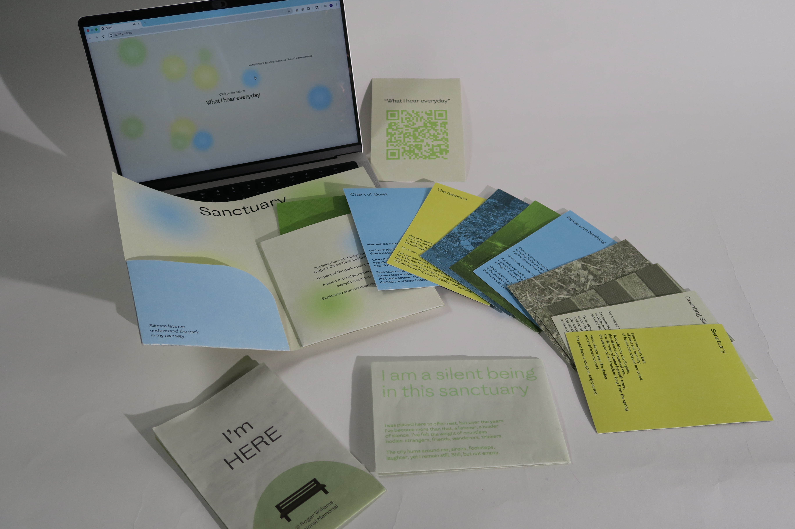
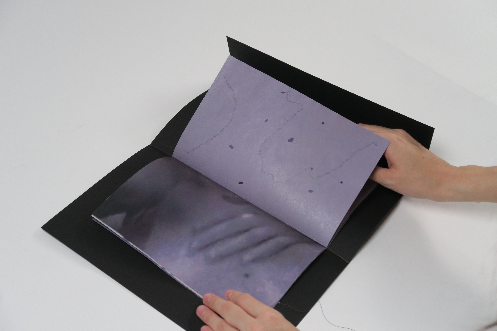
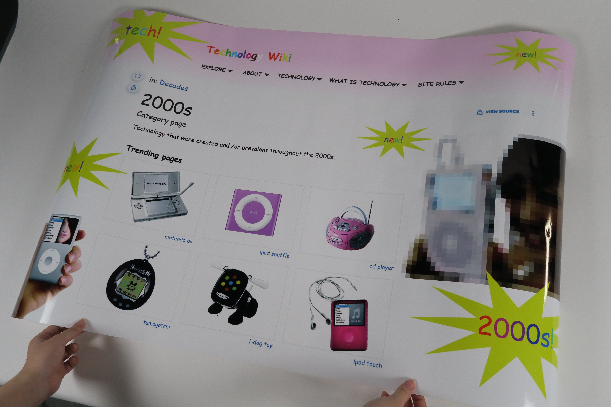
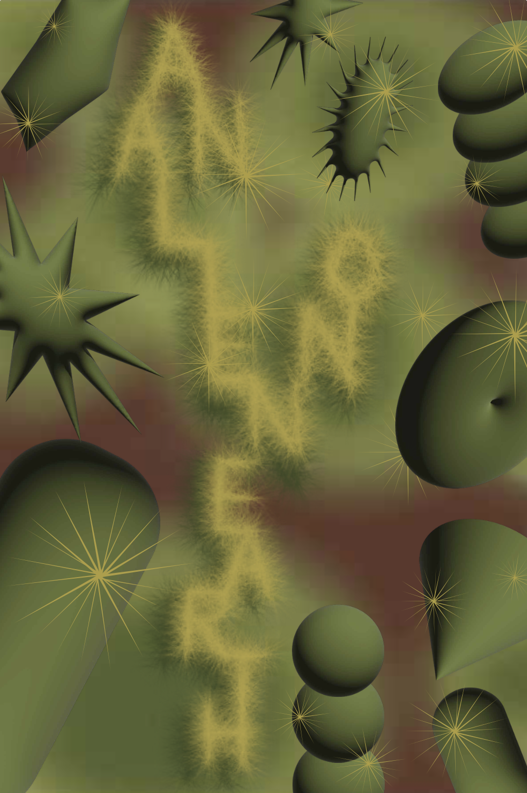

⌂
Projects

Sanctuary Project
Made with Adobe InDesign and Illustrator, HTML
and CSS
The Sanctuary Project is a collaborative study of a single bench and the
subtle, often overlooked world that forms around it. As a group, we
explored how this bench quietly gathers traces of people, weather, and
time and how it becomes a point of pause within the movement of the
Roger Williams Park walk. Rather than treating it as an object, we
examined the atmosphere it creates: the way light settles on its
surface, the way footsteps pass in patterns, the way seasons layer new
textures onto the same familiar place. The project becomes a
meditation on sanctuary in the everyday landscape: a collaborative
attempt to honor how a simple bench can shape experience, hold
presence, and create a space of calm within a constantly shifting
environment.

Sally’s Beauty Mark
Made with Adobe Indesign
Sally’s Beauty Mark is a publication that traces the quiet power of a
single mark and how a mole becomes a site of culture, memory,
femininity, and gaze. Drawing from Helen Lee’s Sally’s Beauty Spot, the
project examines the tension between Asian and Western readings of
beauty, revealing how something as small as a spot can hold the weight
of identity and expectation. Across its pages, the design creates a
slow, contemplative rhythm. Therefore, letting the mole function as
metaphor, symbol, and point of cultural divergence. Sally’s Beauty Mark
becomes an exploration of how we learn to see ourselves through
others, and how small details carry stories that move far beyond the
surface.

Memory Test Poster
Made with Adobe Illustrator
The Memory Test Poster takes an ordinary, universal design. The eye
chart and reinterprets it as a lens into memory and nostalgia. Using
cartoon characters from childhood, like Hello Kitty and Miffy, in place
of letters and numbers, the work transforms a familiar, standardized
system into a personal and playful experience. By maintaining the eye
chart’s strict hierarchy, spacing, and scale, the poster preserves its
universal clarity while layering recognition, memory, and emotion.
What is normally a clinical, neutral tool becomes a bridge between
structured design and personal storytelling, inviting viewers to engage
with the everyday in a new, intimate way.

Technology Wiki Poster
Made with Adobe Illustrator
The Technology Wiki Poster is a nostalgic exploration of early digital
innovation, presenting technologies like the Nano Touch, iPod, and
other iconic devices within a wiki-inspired layout. The poster
translates the familiar structure of old wiki sites, hyperlinks as visual
cues, and systematic typography into a physical, visual artifact.
Through this approach, each technology is contextualized as part of a
larger network of invention, discovery, and cultural memory. Colors,
fonts, and interface motifs reference early web design, while the
curated content celebrates both the playful curiosity and rapid
evolution of consumer tech. The poster becomes a bridge between
past and present, inviting viewers to navigate a history of devices as if
exploring a living, digital archive.

MBFU: The Visual Experience
Made with HTML, CSS, and JavaScript
MBFU: The Digital Experience was created for those who could not attend the exhibition in person. The site includes 3D scans of the gallery space, allowing viewers to explore the works and environment as if they were walking through it themselves. By moving through the scans, visitors can see how the artworks interact with the space, the floor installation, and the atmosphere of the room. The digital format extends the exhibition beyond its physical location, making it accessible anywhere while still preserving the sense of immersion and presence.

Things that Help me Sleep a Little Better
Made with HTML, CSS, and JavaScript
“Things That Help Me Sleep a Little Better: Library of Gratitude” is an interactive website created for my CTC class. Inspired by the idea that happiness is when there isn’t anything left to think about before going to sleep, the site is a digital library of gratitude—a collection of 100 images from moments in my life.

You look like a Tomato
Made with HTML, CSS, and JavaScript
This playful coding project features an innovative HTML filter AI website that transforms your photos into whimsical tomato-inspired creations. Emphasizing fun and creativity, the site invites users to engage with the technology in a lighthearted way, offering a unique experience that encourages exploration and nicheness. By blending coding skills with a touch of humor, this project showcases the delightful possibilities of web development and AI. The interface is designed to be user-friendly, allowing anyone to turn their camera on and have an interactive experience with the website. This project not only highlights the joy of coding but also serves as a reminder of the playful side of technology and AI, but showing my color as a unique designer.

My Name is Dokdo
View PDF
Made with Adobe Illustrator and Adobe InDesign
"My Name is Dokdo" is a thoughtfully crafted zine designed to educate students and educators about the complex and often controversial history of the island of Dokdo. Through a visually engaging format, this zine breaks down the multifaceted issues surrounding Dokdo into accessible and neutral language, making it easy for readers to grasp the significance of this disputed territory. The artwork and layout invite curiosity while promoting an open dialogue about national identity, historical context, and the importance of understanding differing perspectives. By presenting the information in a digestible manner, "My Name is Dokdo" aims to foster informed discussions and encourage critical thinking about the narratives that shape our understanding of geographical and cultural issues.

Ribs, Rites, Ruptures
Made with Adobe Indesign, Bound with Coptic Binding, Printed on Butcher Paper
3.5"x7"
Ribs, Rites, and Ruptures is a book about Korean women writers, memory, the body, and resistance. The design reflects these themes through both material and form. The book is bound with red coptic stitching, showing along the spine like flower petals. The red thread represents beauty, pain, and the act of holding things together—just like the women in the stories and poems. It also echoes the blood and rebellion found in the work of Korean poets like Kim Hyesoon, whose writing is raw, surreal, and powerful. The book is made from butcher paper, a soft, semi-transparent material. It feels fragile, like skin or memory, and allows hints of what’s inside to show through. This layered look mirrors the emotional and historical depth in the work of writers like Han Kang, who writes with quiet intensity and silence. The book honors the strength and transformation found in contemporary Korean poetry and fiction. It is made to feel like a ritual: stitched by hand, gentle but fierce, full of layers, silence, and life.

My YNHD (Yeonhui-dong)
Made with Adobe Indesign, Perfect Binded
This issue centers on Yeonhui-dong, a quiet neighborhood in western Seoul that occupies a space between city and suburb, motion and pause. Tucked between the more urban districts of Hongdae and Sinchon, Yeonhui-dong is shaped not by spectacle, but by its subtle rhythms—narrow streets, low-rise homes, and small businesses that foster a slow and steady pace of life. The magazine explores this unique atmosphere through manipulated photographs and spatial studies that focus on mood, memory, and transition. Rather than presenting Yeonhui-dong as it is, the imagery in this issue intentionally distorts, layers, and softens the real—blurring the line between documentation and impression. By adjusting light, scale, and texture, the photographs become a tool for reinterpreting the everyday—revealing a more internal, emotional reading of place.

The Human Cube
Made with Adobe Illustrator
7” x 7” x 7"
The Human Cube is a conceptual color theme inspired by the visionary futurism of Pierre Cardin, whose Space Age designs of the 1960s redefined fashion through geometric form, architectural structure, and avant-garde innovation. This project translates his iconic aesthetic into a chromatic experience, fusing metallic minimalism, neon vibrancy, and deep-space tones to evoke a sleek, modular future. Drawing from Cardin’s use of unconventional materials like vinyl, metal, and plastic, and his unisex, sculptural silhouettes, The Human Cube envisions clothing and color as extensions of space-age architecture. The theme celebrates Cardin’s legacy as a designer who saw fashion as a total art form, merging the human body with futuristic habitats, and reimagining personal expression through the lens of interstellar design.

Two Designer Accordion Book Design
Made with Adobe InDesign and Adobe Illustrator
8.5” x 24”
This project explores the lives and work of two designers—one historical and one contemporary—through a detailed timeline that highlights their training, areas of interest, projects, and professional journeys. While both have contributed to various artistic fields, the focus remains on their impact on graphic design, along with the influences that shaped their creative evolution. To visually unify the project, I designed an accordion book that reflects the psychedelic themes present in both artists' work. The structure of the book allows for a fluid, unfolding narrative, echoing the way their designs challenge perception and push creative boundaries. The cover leaf serves as both a closure and an invitation—drawing the viewer into a world of vibrant colors, hypnotic patterns, and layered storytelling.

Typography One Book
View PDF
Made with Adobe Indesign and Adobe Illustrator
11"x17"
This project represents a culmination of the skills and techniques learned throughout Typography I, where the focus was on mastering the foundational elements of type design. Through a series of exercises and creative explorations, I delved into the core principles of typography, from letterform construction and spacing to hierarchy and readability. The work reflects my growing understanding of how typography communicates visually, the impact of font choices, and the balance between functionality and aesthetic appeal. It’s a journey through the nuanced world of type, where form meets function, and where every curve, line, and space plays a vital role in crafting meaning. The book itself can be seen as a work of typography.

Me Before U: Erin's First Exhibition
Made with Adobe Indesign and Adobe Illustrator
MBFU (short for Me Before U) is my first exhibition poster, created as both a visual identity and conceptual entry point into the project. Visually, the poster depicts a pink illustrated space filled with interconnected lines and bubbles, symbolizing how individual moments, relationships, and ideas are all part of a larger connected whole. This network-like imagery reflects the central theme of MBFU: that personal stories are always interwoven with collective experiences.

YYMINY
Made with Adobe Indesign and Adobe Illustrator
16” x 20”
YYMINY is rooted in simplicity and modernity, utilizing Helvetica, timeless aesthetic as a foundation for visual communication. Through careful gradation techniques, I explore the dynamic interplay of typography and form, crafting creative posters that balance clarity with expressive depth. This approach allows for a seamless blend of structure and experimentation, reinforcing the brand’s identity while pushing the boundaries of typographic design. YYMINY embodies a refined yet bold visual language that evolves through nuanced gradation and typographic precision.

Object Poster
Made with Adobe InDesign and Adobe Illustrator
11” x 24”
This project explores the challenge of visual communication by abstracting a given object into a singular poster design without relying on direct representation or sequential storytelling. By utilizing color, shape, and composition, the design conveys the essence and emotional impact of the object, encouraging viewers to engage in deeper interpretation. The approach pushes the boundaries of traditional object depiction, inviting creativity through conceptual expression rather than literal imagery.

Designed Typeface: Blossom
Adobe InDesign, Adobe Illustrator and Adobe Photoshop
This project explores that evolution by designing a custom lowercase Latin alphabet named Blossom. It is based on a flower-shaped grid system—a structure that introduces organic, feminine qualities to letterforms while maintaining the principles of reduction and abstraction that define graphic design. The process of developing this type system reinforced the essential design practice of simplifying and refining information into a functional visual language. To further contextualize the typeface, I created mockups for flower packaging, where the soft, organic forms of the type harmonize with the product’s natural essence. Understanding of how writing systems develop, while also strengthening my ability to merge conceptual thinking with functional design, creating typography that is both expressive and practical.

I Love Silence
Made with Adobe Indesign and Adobe Illustrator
This project, “I Love You, Silence”, explores the concept of silence through both digital and physical mediums, emphasizing its presence as something to be seen, felt, and engaged with. As part of this exploration, I developed a brand identity that visually represents silence through a series of logos and symbols. Each design choice—whether in typography, minimal forms, or negative space—aims to embody the stillness and depth of silence. Some logos evokes calm, as well as trendiness as the audience are people in this generation, while others highlight the contrast between absence and presence. Through these symbols, silence is given a form, a recognizable mark in a world saturated with noise. Together, these elements work in harmony to advocate for silence—not as emptiness, but as something profound and worthy of appreciation.

Letterpress Print
Made with Letter Press, CTP, Adobe Illustrator and Procreate
Exploring letterpress for the first time was a transformative experience, bridging traditional printmaking with digital design. Using InDesign and CTP (Computer-to-Plate) technology, I translated my design I made on Procreate into Adobe Illustrator into a physical print, bringing my artwork to life in a tactile, textured form. The process of setting up plates, inking, and pressing each print by hand deepened my appreciation for the craft—where every detail, from pressure to paper choice, impacts the final outcome. Despite being new to the medium, the result exceeded my expectations, reinforcing the beauty of combining digital precision with analog techniques. This experience not only expanded my technical skills but also reshaped how I think about design—balancing control with the unpredictability of the press.

Useless Wearable
Made with Satin Cloth, Rocks and Sewing Machine
This project explores the intersection of fashion, sculpture, and discomfort through the creation of an elegant yet impractical wearable piece. I designed a pair of extraordinarily long gloves embedded with rocks, challenging the conventional functionality of clothing. The gloves, while visually graceful, disrupt ease of movement, transforming a symbol of delicacy into a weighty burden. This was also my first exploration into sewing, adding a personal layer of growth and experimentation to the process. By merging restrictive elements with refined aesthetics, the piece invites contemplation on the relationship between beauty and constraint in wearable art.

The Sun
Made with Plaster, Wood, Acrylic Paint, Marker, Newspaper
31.2"x46.1"
A radiant exploration of light, form, and transformation, The Sun captures the dynamic energy of the natural world. Created using a striking combination of plaster and wood, the sculpture evokes the celestial power of the sun, drawing upon the contrast between the raw, earthy texture of wood and the smooth, ethereal surface of plaster. The form is rememberable both grounded and luminous, as though it holds the essence of creation itself. Through this piece, the artist invites the viewer to contemplate the interplay between materiality and the intangible forces that shape our existence, offering a glimpse into the eternal dance of life and energy of a bright color yellow.

Charcoal Animations: Strawberry Girl
Made with Newsprint and Charcoal
This charcoal animation tells the surreal story of a girl transforming into a strawberry, a visual metaphor for love, longing, and identity. Inspired by the expressive and evolving nature of William Kentridge’s work, the animation embraces the raw, ephemeral quality of charcoal—where every erased mark lingers like a fading memory. The strawberry symbolizes the love of her life, an obsession so deep that she slowly becomes what she adores. The textured, hand-drawn frames capture the delicate balance between transformation and loss, illustrating how love can reshape us in ways both beautiful and irreversible. Through the smudges, erasures, and evolving imagery, this piece explores the fluidity of self in the face of overwhelming emotion.

50 Drawings Final
Made with Newsprint and Charcoal
8.5” x 11”
This collection of 50 charcoal drawings delves into the profound themes of silence and openings, capturing the delicate interplay between absence and presence. Each piece invites the viewer into a meditative space, where the simplicity of charcoal evokes a sense of stillness and introspection. Through intricate shading and subtle textures, the artist explores moments of quietude—whether in the vastness of an empty landscape, the intimate embrace of shadows, or the soft contours of architectural openings. The drawings serve as visual gateways, encouraging reflection on the beauty found in silence and the potential for new beginnings that lie within each opening. Together, these works create a contemplative journey that speaks to the power of stillness in a world often filled with noise.

In Class Figure Drawing
Made with Charcoal and Newsprint
15” x 22.75”
During a one-day nude model drawing session at RISD, I discovered an unexpected foundation for my approach to graphic design. Observing and capturing the human form in real time challenged me to see beyond surface details—to focus on composition, negative space, and the rhythm of lines. This experience taught me the importance of structure, balance, and intentional mark-making, principles that directly translate into my design work. Through each sketch, I developed a deeper understanding of how visual elements interact, a skill that continues to shape my approach to typography, layout, and branding. What began as a figure-drawing exercise became a pivotal moment in my growth as a designer, reinforcing that at the core of all visual communication lies the art of seeing.

Pruney
Mixed Medium- Pen, Digital
11.3"x12.2"
Some parts of human skin, better known as glabrous skin, have a unique response to water. Unlike the rest of the body, the skin of our fingers, palms, toes, and soles wrinkles after becoming sufficiently wet. This phenomenon was interesting to me, therefore I illustrated it in a line work pattern. This is a mixed medium pattern piece where I experiment with combining a piece done on pen and paper, and a piece that was done digitally. The colors can represent the two different personas that are coexistent with each other. They complement the idea of humans having unique phenomenal features.

When SEWOL Comes
Made with Plaster Strips, Spray Paint, Foam Spray and Rope
23.7"x19.1"x35.3"
Occurred on the morning of 16 April 2014, when the ferry MV Sewol was en route from Incheon to Jeju in South Korea. The sinking of Sewol resulted in widespread social and political reactions within South Korea. Around 304 have passed away due to the accident, which includes students and teachers, as well as 5 students still missing to this day. After a lot of consideration is making an anchor out of hands. Around 50 students participated in the project and took the time to be a part of something greater than themselves. I wanted to represent the weight and heaviness Koreans feel when they think about this tragedy. It also is related to how during the tragedy, they never let go of the anchor because the ship sank before its destination. Symbolizing the possibility of arriving safely at their destination. The title translates to “The time will come” since Sewol directly translates to time in Korean. The anchor represents the time when rest would come, as well as the time of closure.

My S(e)oul and (He)art
Made with Trash bag, Parcel Ribbon, Foam spray, Wire, Light
17.4"x18.2"x32.1"
The variation of the title is “My Seoul and Heart”, alternatively, “My Soul and Art”, when taking out the bracket words. This represents when I moved to Korea, my heart never settled and I had a lot of reminiscences of my past life in America. As a third culture child, I had various encounters with cultural barriers. But now, 11 years later, my heart is with Korea. I resonate with Korean history now, cheer on Korean sports teams and digest more Korean media. This digestion of media shaped my interests in Korean music, literature, and lifestyle. The materials that were used are Korean commonly used in their everyday lives. Recycling these materials means that my heart was made up of the things I have learned and digested from an already established culture, making it my own. Also represents the familiarity Koreans could feel with this project because of the use of materials they see every day. The familiarity and iconic Korean characters that my heart and soul are made up of.

Pandora's Box
Made with Watercolor and Pen
23.1"x28.6"
The paradoxical nature of curiosity is personified by the ancient Greeks in the mythical figure of Pandora. Her various emotions and thoughts are represented through the figures in the painting. The vibrant alluring colors represent Pandora’s brimming with excitement at life on Earth. She knew that opening the box could lead to irreversible consequences, but her thirst for knowledge and desire to question her surroundings surpassed those thoughts. Pandora’s Box suggests the extreme consequences of tampering with the unknown, but Pandora’s burning curiosity also suggests the duality that lies at the heart of the human inquiry. The futuristic calming and extraterrestrial undertones, coupled with the neon coloring. The petite and delicate features are given to the muses.

The Tipping Point
Made with Watercolor, Prisma Colored Pencil and Pen
18.1"x39.8"
A tipping point is a critical point in an evolving situation that leads to a new and irreversible development. The term is said to have originated in the field of epidemiology when an infectious disease reaches a point beyond any local ability to control it from spreading more widely. This piece represents the possibility of an impact one can make in society. Where all things revolve around you. Neither are you floating or sinking in this overwhelming society, rather swimming. Swimming for new possibilities and development within, not in society, but yourself. Eventually, meaning that you can be society’s tipping point. I have received the MPED 2022Q1 International Art&Design Awards OCTA for this piece for the High School division for The Tipping Point.

Thank you for always doing your Best
Made with Linoleum, Newspaper, Paper, Printing Ink
31.2"x46.1"
The phrase carved on the stamp is a phrase used on a Korean traditional stamp people use a lot at school. The phrase directly translates to "Good Job!". It is an iconic stamp that has good feelings resonating with it. It is also a childhood memory for a lot of Korean children, including me. I created my own variation on the stamp. There are usually a boy and a girl, but instead, I carved two women to represent my color and art style. I wanted to utilize a material that I have not usually used before, therefore, I used a stamping technique to print these prints. These variations of the print were used in the common school pen colors I used during school. Being able to personalize my idea of my childhood through my interpretations can hopefully reach out to the viewers more. It is personalized to my own culture and I want to intend it to be a creative style that represents me in the present moment. Hence, this piece represents my culture and my memory, ultimately nostalgia.

Why are we so Selfish?
Made with Watercolor, Prisma Colored pencil, and Pen
24.3"x16.4"
One could understand someone's viewpoint in life through how they move forwards. It Is complicated and hard to understand because they are all unique, but a lot tend to stand out more than others. The different colored lines and how they are pointing in the same direction relates to how people move forward in life and how their influence as their thoughts guide them. There is a lot of overlap in colors and also a streak of watercolor that is over the feet which represents the flow in direction of life and how people should always go forward in life. The different colors just represent different colors of people that move forward and their diversity in emotions. The relation to being able to see different people have different perspectives in life regarding how they move on in life. Being able to see the mark of everyone's path. how they would carry on in life and how their interaction with others in life also affects how they move forward either to strive or to hold on in life.

Self Love
Made with Acrylic Paint
24.4"x24.4"
This piece represents self-love as the same three people are represented in the piece. The hair from all three of the figures is a form of self-love and unity. The figures all have a form touching and interacting with each other. Representing that they are always taking care of each other, self-care. Their gaze all falls on either each other or the viewer. The gaze towards the viewer represents a call to action for the viewer to also love themselves. The challenge for this piece was that I had multiple layers behind in, six exactly. I kept repainting over the canvas size. I didn't like the idea. The process of this piece also revolves around the idea of loving all the process and process it took to get to a final form. The process of getting to a certain point is a sign of development and should be appreciated in itself, ultimately, Self Love.

Dansaekhwa: Chaotic Composure
Made with Acrylic and Korean Traditional Ink Pen
31.2" x 46.1"
An art movement born in South Korea in the 1970s with an attempt to break away from the heritage of Japanese imperialism & Western abstraction. Avoiding any reference to Western realism, artists created primarily monochrome and minimalist paintings. Since Dansaekhwa is treated as a movement for freedom from imperialism, the pieces tend to be nationalistic. I wanted to create a piece that radiates Korea. Therefore having traditional Korean stylistic features and color schemes. Using traditional materials like Korean ink to enhance Korean quality. Embracing different techniques and approach canvas size that is fairly large. The piece is a union and fusion of all the preliminary techniques and material testing that was learned. The piece incorporates positive and negative elements to create an organic form. The limiting organic color choice was used to simplify the painting and enhance other elements. Creating a piece that also represents freedom and calm within the chaos.

Human Conscience
Made with Color Prisma Color and Pen
24.3"x16.4"
Human Conscience is the idea of the humanly bonding experience. More specifically, the flow of human union. This piece questions how everyone has the same properties when it comes to human nature. Meaning the unique feelings only humans obtain. The variety of color usage represents how emotions can flow together from person to person. Therefore, merging as a single line. The people have no facial expressions since they are unbothered and not swayed by the variety of emotions presented by society. The similarity in their facial features is illustrated to build a bigger picture of human expression, a community. Rather they can be gullible to one another, as they are mere reflections of each other. I have received the International Teenager Design & Art Award Special Selection in 2021 for Human Conscience.

My Treasure Han
Made with Oil pastel, Squid ink, Color pencil, Watercolor and Pencil
46.9"x29.7"
The treasure of my culture is represented through femininity and how femininity has changed cultural representation in Korea, especially artistically. As well as the unique feeling of Han. It is a feeling of resentment that is unique to Koreans and is indescribable for foreigners since there is no direct translation of the word. This piece started in the summer of 2020 and took around a year to finish due to the variety of materials used. The overall overwhelming themes of aesthetics as there are a lot of Korean colors and patterns that represent culture can be expressed. There is also a woman in the middle who seems to be peacefully unbothered by the moving culture but is immersed in the painting and the different things around her. Since culture is a big part of human identity and how we present ourselves to the public, people struggle with cultural identity. I wanted to express culture creatively and its impact by describing a feeling that is unique to Korean culture.

Gut Feeling
Made with Prisma colored pencil
8.5” x 11”
Inspired by the book blink by Malcolm Gladwell, it explores the meaning of human intuition. This relates to the theme of vulnerability since the concept of gut feelings is the rawest human feeling. The gut feelings of someone can be represented as a feeling that wants to come out but is suppressed by themselves as they aren't feeling that are logical. The fear of being wrong can be represented through gut feeling. The gut feeling someone feels represents their true thoughts, without sugarcoating. The hands coming out of the figure represents the impulsive grasp of emotions one feels when they have intrusive thoughts. This illustrates the raw spontaneous emotions when you know something is off.